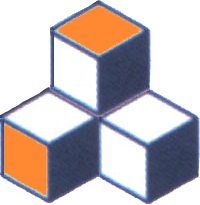
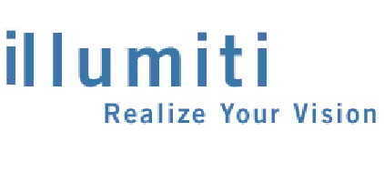

The original Cuberoot website
Kept as it was in its final version. Use the menu on the left to move through the original pages. ← Back to Then & Now

The constant in an ever changing Information Technology Landscape.
In today’s environment, most businesses are struggling to cope with ever changing Information Technology. Cube Root Systems Architects Ltd. has been the beacon to its business partners in the maelstrom of today’s IT landscape. Whether it is client-server, wireless technology, Enterprise Resource Planning (ERP), Data warehouse, E-Commerce or Web Portals, Cube Root Systems is a recognized leader in the industry. Their experience with Fortune 500 companies and Small, Medium Businesses (SMB) makes them unique. Cuberoot Systems’ mission is to maintain its excellence in today’s technology without sacrificing the new and emerging technologies.
© Cuberoot Systems Architects Ltd. 1995-2009
Who we are.
Cube Root Systems Architects Limited has been in the Enterprise Resource Planning software and system integration business for more than 15 years. We started as implementors of SAP R/3 in the Fortune 500 companies when SAP R/3 was still relatively new in Canada. In 1996, some of our current employees were involved in SAP’s pilots of R3 in medium sized companies. SAP’s ASAP methodology was one of the fruits of those pilot projects.
The success of Cube Root Systems Architects Ltd., as reflected in its average annual sales and profit growth of more than 30%, is attributed to the technical capability of its staff, the continuing satisfaction of its clientele, and the marketing success to obtain new clients.
Mr. Willy Rosales founded Cube Root Systems Architects Ltd. in 1995. From a startup company, he was able to guide Cube Root Systems Architects Ltd. to become a profitable and highly regarded Computer Systems Integrator. He is considered as a subject matter expert in the field of SAP Technical Infrastructure, Architecture and Technology. He has managed and implemented large scale and complex Computer Integration Projects. He is adept in managing people and technology and has shown extra ordinary leadership skills.
Willy Rosales has more than 20 years of information technology experience ranging from presales activities, management consulting, application development and system administration to system/application consulting with the last fifteen years fully focused on SAP implementations. He has in-depth knowledge of Open System architecture having worked for leading Open System vendors including Hewlett Packard (Canada) Ltd.
© Cuberoot Systems Architects Ltd. 1995-2009
What we do.
- ABAP Programming
- SAP R3 Authorization
- SAP Basis Consulting
- “Go-Live” support and staff augmentation
- Data loading from legacy systems
- Data Interfaces to 3rd party and legacy systems
- Technical Infrastructure Planning
- System and Data Network sizing and Architecture
- System provisioning
- Network Installation
- Data Centre operation
- IT Staff augmentation
- System Sustainment
- Business “Needs and Gap Analysis”
- Business and Systems Project Management
- Business “Blue print” and Work Process optimization
- System Implementation and Business Process Realization
© Cuberoot Systems Architects Ltd. 1995-2009
What we offer.
- SAP R/3 Technical Consulting
- SAP R/3 System Programming & Development
- SAP R/3 Risk Management
- SAP Business Warehouse Technical Consulting & Programming
- SAP Business to Business Technical Consulting
- Web Portal Architecture & Development
- Emerging Technology Architecture
© Cuberoot Systems Architects Ltd. 1995-2009
Who are our customers.

© Cuberoot Systems Architects Ltd. 1995-2009
How to contact us.
- By email:
- inquire@cuberoot-systems.com
- By phone:
- [Removed for privacy]
- By mail:
- [Removed for privacy]
© Cuberoot Systems Architects Ltd. 1995-2009
Demo Web Portal
The demo portal was retired along with the company. This link is kept only as part of the original menu.
© Cuberoot Systems Architects Ltd. 1995-2009